My Study Abroad
私の4週間メルボルン留学
2025年11月、オーストラリア メルボルンで 4週間の短期留学を経験しました。 このサイトでは、学校生活や学生寮、 メルボルンでの暮らしなどを紹介します。
期間 : 4週間
時期 : 2025年11月
学校 : Universal English
滞在 : Campas Melbourne 学生寮(1人部屋)
School Life
Universal Englishでの学校生活

どんな学校?
メルボルン滞在中はUniversal Englishに通いました。 Universal Englishは、メルボルンの中心街にあるOxford系の語学学校で、 さまざまな国から来た学生と一緒に英語を学びました。
初日はオリエンテーションとスピーキングテストがあり、クラス分けされ、 翌日からクラスで授業を開始。 最初は少し緊張しましたが、授業やクラスメートとの交流を通じて、 徐々に学校生活に慣れていきました。
一緒にランチしたり、放課後に街中散策に出かけたり、単なる海外旅行では 味わえない充実した経験ができました。
Student Life
学生寮での生活
1人部屋で生活
4週間の留学中は学生寮の1人部屋に滞在しました。 室内にはシャワーとトイレ、冷蔵庫と電子レンジ、洗面台、テレビ、ベッド が備えられているので、自分の時間を持ちながら生活することができました。
学生寮にはジム、屋外プール、バスケットコート、カフェも備わっていて、 1階のロビーで勉強したり、ジムで軽く運動したりして過ごしました。 プールサイドにあるバーベキュースペースで学生仲間とカンガルーのお肉にも挑戦! (ちょっと筋肉質な感じでした…)
良かったこと
学生寮には現地の学生もいて、寮のアクティビティに参加して、彼らと交流する機会もありました。 映画観賞会やクリスマスカード作りにも参加しました。
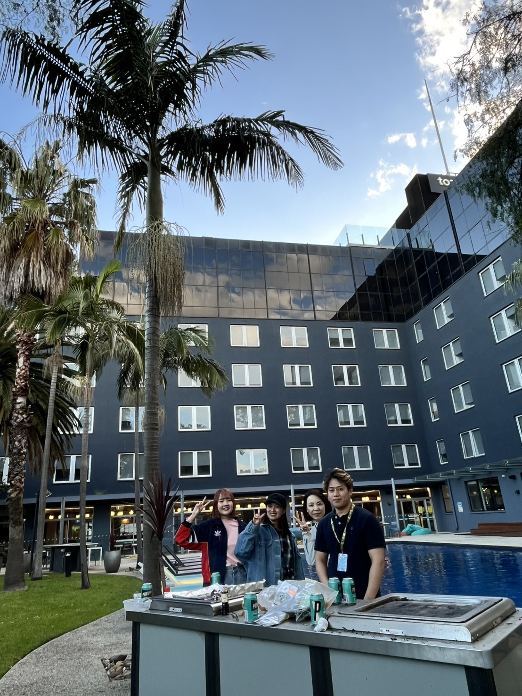
A Day in Melbourne
メルボルン留学のある1日
平日は語学学校を中心に、授業後は街中観光を楽しみながら メルボルンでの生活を過ごしていました。
6:00
起床・朝食
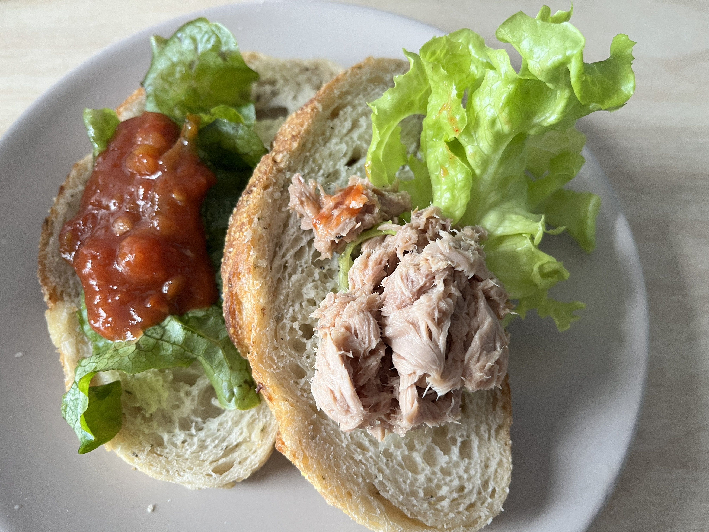
寮の部屋で朝食。学校へ行く準備をします。 朝食はスーパーで買ったパンにトッピングを載せて簡単にアレンジ。
7:30
学校へ
学生寮から学校へはトラムで通っていました。 Myki(マイキー)パスを購入しておくと、留学中の交通費はそれだけで済みます。 ちなみにMykiパスは、トラム、電車、バスのいずれも使えるので、 初日に購入するのがおススメです!

8:30
学校の授業
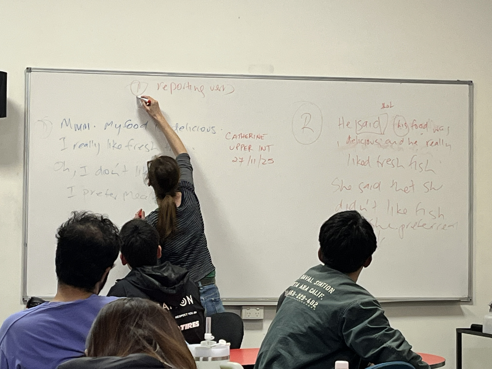
クラスメートと一緒に英語を学びます。 この日の1限目は文法の授業。 2限目と3限目は月に1度の課外授業なので、とても楽しみです。
10:00
課外授業
課外授業は、ビクトリア国立美術館へ見学に行きました。 美術館は1日では回り切れないくらい広く、見ごたえもありました。 そして無料で見学ができます。

13:00
ランチ

美術館見学の後は、近くの公園で、パンやスナックを広げて、 クラスメートとランチを楽しみました。 天気も良く気持ちのいい午後でした。
14:15
授業終了
授業後は街歩きやカフェなどを楽しみます。 今日は別のクラスの友人と近くのビーチに足をのばします。

14:30
セントキルダビーチ
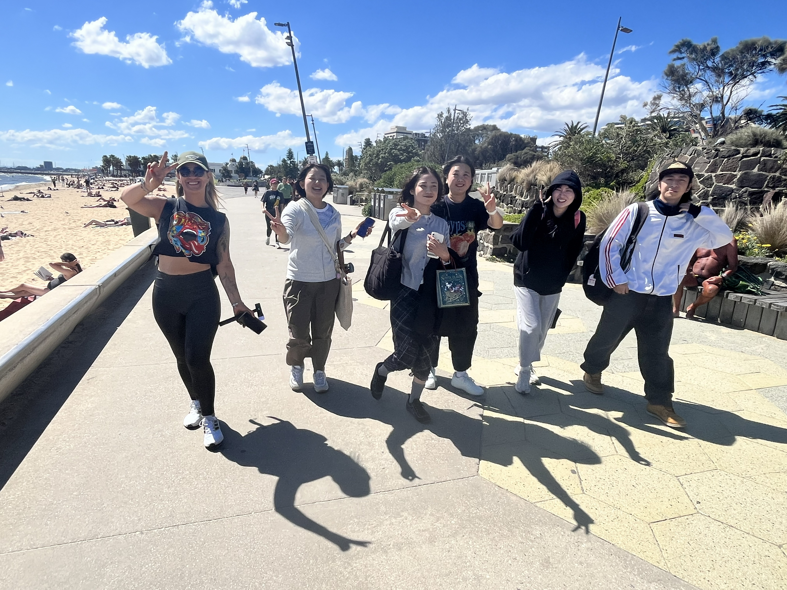
ビーチは学校からトラムで20分程度のところにありました。 今日は天気も良く日差しも暑く、たくさんの人たちが日光浴にきていました。 ビーチで遊んだ後は近くのカフェでちょっと一息。
18:00
買い物・夕食
学生寮に帰る途中でスーパーに立ち寄って食材をゲット。 食材の値段は総じて日本とそんなに変わらない印象でした。 (食材のポーションが大きいので一瞬割高に感じますが、 量を考えると高くはないかなと)
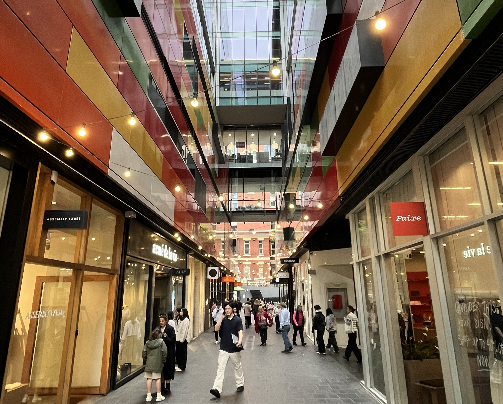
20:00
夕食・自由時間
夕食は日本から持ってきた携帯用のご飯と、買ってきた食材で料理。 部屋には冷蔵庫や電子レンジ、寮の各階には共同キッチンもあるので、 自炊には困りません。 夕食の後は、宿題をしたり、翌日の準備をしたりして過ごしました。
Melbourne Life
都会と自然、両方を楽しむ
メルボルンでは、学校のある平日も休日も、 街歩きやカフェ、自然を楽しむことができました。 便利な都会でありながら、少し歩くと緑を感じられるところが魅力です。
01 City
メルボルンの街並み
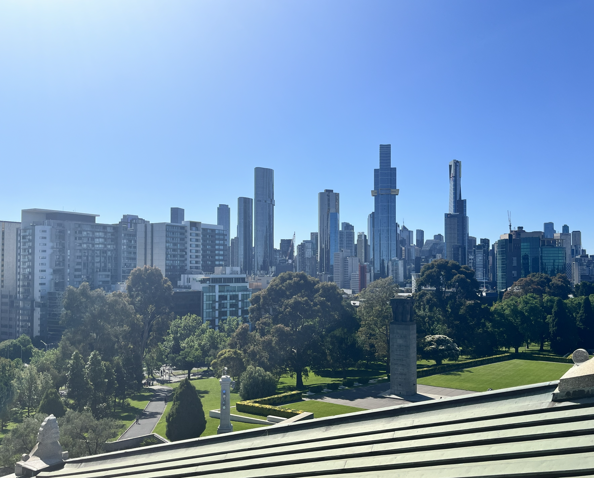


トラムが走る街並みや歴史を感じる建物、近代的なビルなど、 歩いているだけでも様々な表情を楽しむことがでしました。 ほとんどの語学学校はメルボルンの中心街にあり、 学校帰りに街中を散策したり、生活用品を調達したりできます。 街中ではトラムを無料で乗車することができます。
02 Architecture
メルボルンの建築物


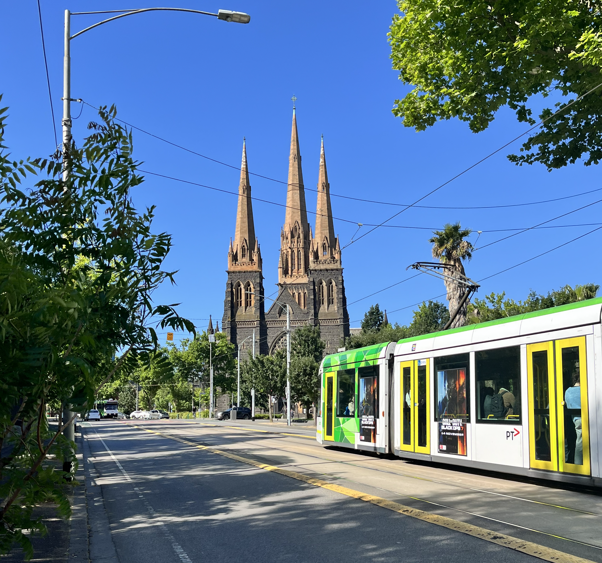
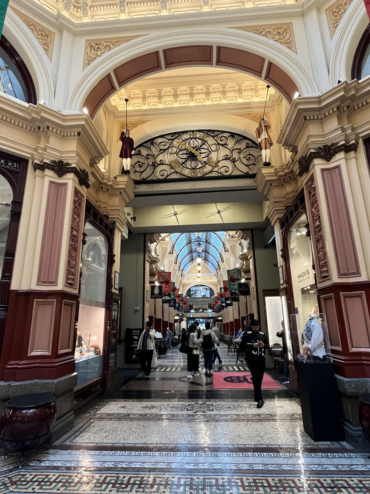
(左上)フリンダーストリート駅 (右上)ビクトリア州議事堂 (左下)セントパトリック大聖堂 (右下)アーケード
街には、歴史的な建物やアーケードも多く、見ごたえがあります。 ゴールドラッシュで栄えた時代に建てられた建物が今も街のいたるところで見られます。 ちなみにビクトリア州議事堂は、予約をするとガイドツアーに無料で参加できます。
03 Nature
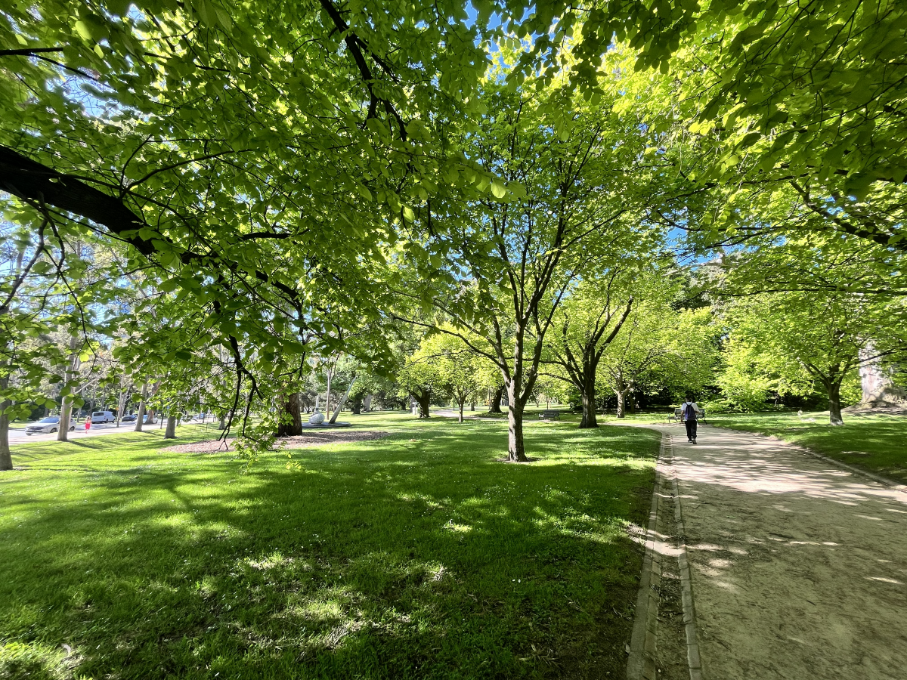
公園や緑が身近にあり、都会にいながらリラックスできます。

中心街を出て車で少し行くと、牧羊地などが広がっています。
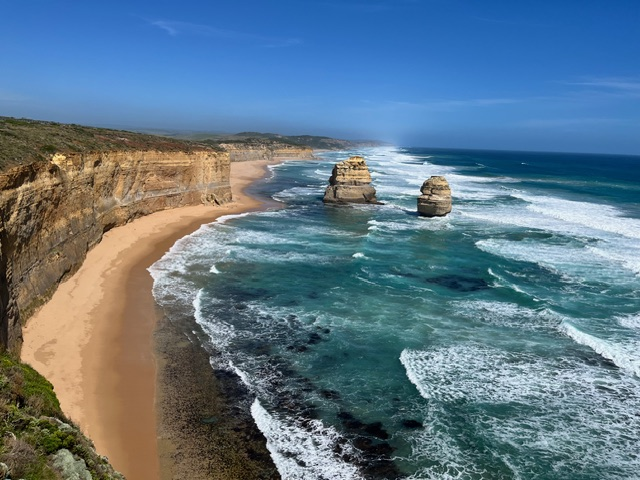
週末は日帰りツアーに参加しました。写真は「グレートオーシャンロード」です。
My Favorite Places
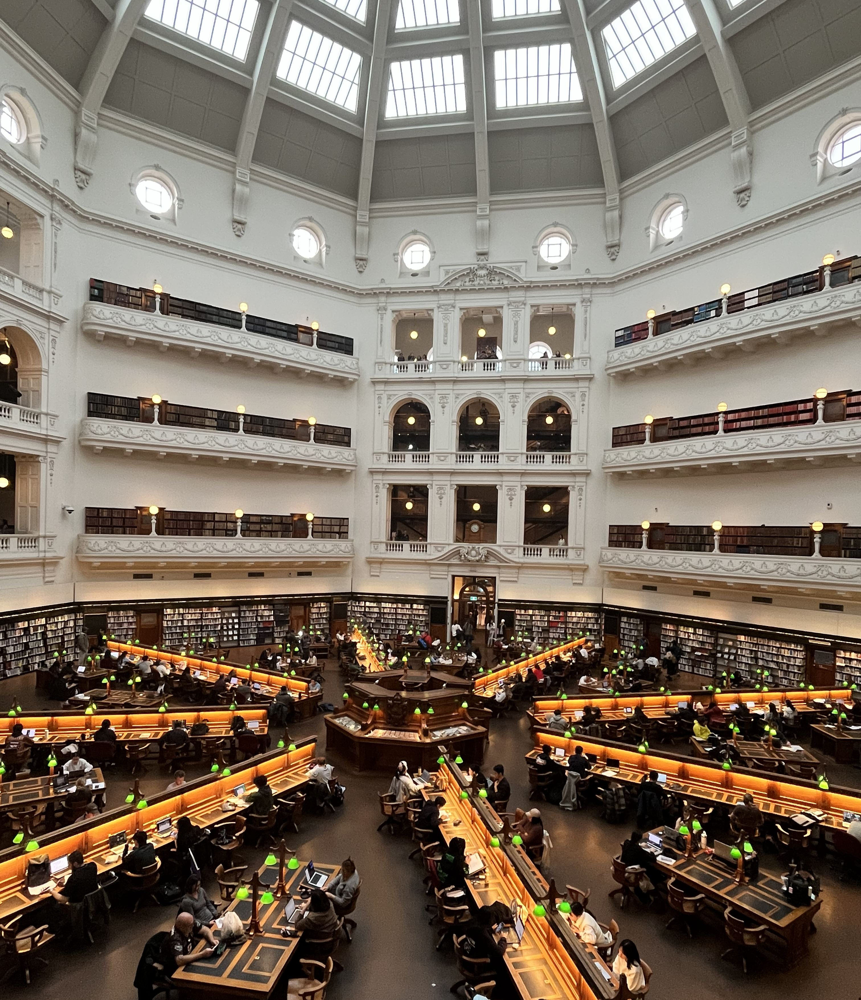
ビクトリア州立図書館
私が留学先をメルボルンに決めた理由の一つ「ビクトリア州立図書館」。 ハリーポッターの世界を彷彿させる内観、ここで私も勉強してみたい! と思った場所。留学中はよく学校帰りに立ち寄って、 宿題を片づけたりしていました。

クイーンビクトリアマーケット
メルボルン最大のマーケット。生鮮食品はもちろん、雑貨や日用品が 安く手に入ります。土産物も手ごろにゲットできます。 ちなみに、学生寮の共有キッチンに置いてある包丁の切れ味があまりにも 悪かったので、自分用のキャンピングナイフをここでゲットしました。
Cost
4週間の主な留学費用
| 項目 | 費用 | 補足 |
|---|---|---|
| 航空券 | 約10万円 | 日本⇔メルボルン (ケアンズ経由) ジェットスター航空 |
| 留学エージェントの パッケージ |
約35万円 | 語学学校、学生寮、海外留学保険、等 |
| 食費・交通費など | 約10万円 | 主な生活費 |
Study Abroad Tips
行く前に知っておくと安心 !
01 交通
空港と市街地の移動はタクシーのため、Uberなどのタクシー予約アプリを事前に登録しておくといいです。 現地の交通機関は、トラム、電車、バスなどがありますが、すべてMykiが使えるので買っておくと便利です。
02 買い物
滞在場所の最寄りのスーパーの場所などを確認しておくと安心です。 メルボルン中心街にもスーパーや日用雑貨を購入できるお店が数多くあるので、 学校帰りに買っていくこともできます。
03 服装
メルボルンは天候が変わりやすいので、調整しやすい服装がおすすめです。 オーストラリアでも南に位置しているため、他の都市に比べて気温は低め。 11月は初夏のはずなのにジャケットがとても役に立ちました。
My Thoughts
4週間の留学を終えて